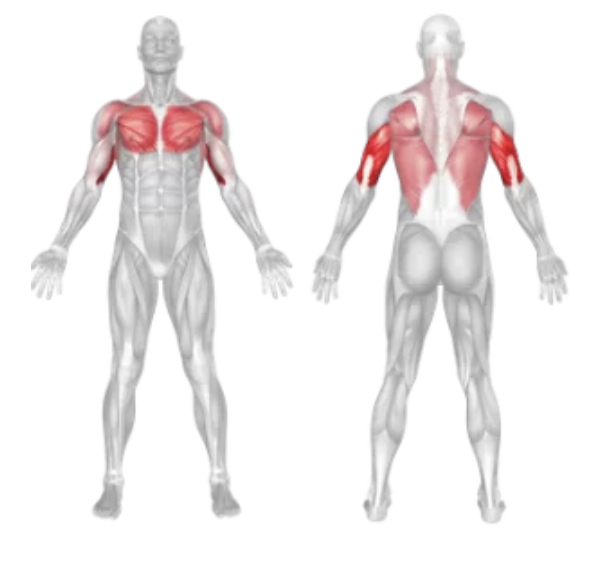
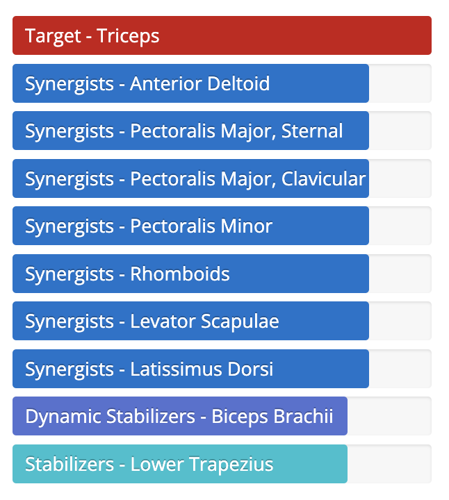

Setup
- Find a sturdy bench or platform and sit on the edge with your hands next to your hips.
- Extend your legs forward with your heels on the ground and slide your hips off the bench.
- Keep your arms straight but not locked, and maintain a tight core.
Execution
- Lower: Bend your elbows and lower your body until your upper arms are parallel to the floor.
- Push Up: Press through your palms to raise your body back to the starting position.
- Repeat for the desired number of reps.
Tips for Effectiveness
- Keep Elbows In: Avoid flaring your elbows out; keep them pointing backward to protect your shoulders.
- Go Deep: Lower yourself until you feel a good stretch in your triceps, but don’t go too deep to avoid shoulder strain.
- Leg Position: Bend your knees to make it easier; straighten your legs to increase difficulty.
Benefits of Bench Dips
- Triceps Isolation: Effectively targets and tones the back of your arms.
- Minimal Equipment: Can be performed almost anywhere using a bench, chair, or box.
- Improves Upper Body Strength: Helps in developing pushing power for compound movements.
Muscles Worked in Bench Dips

